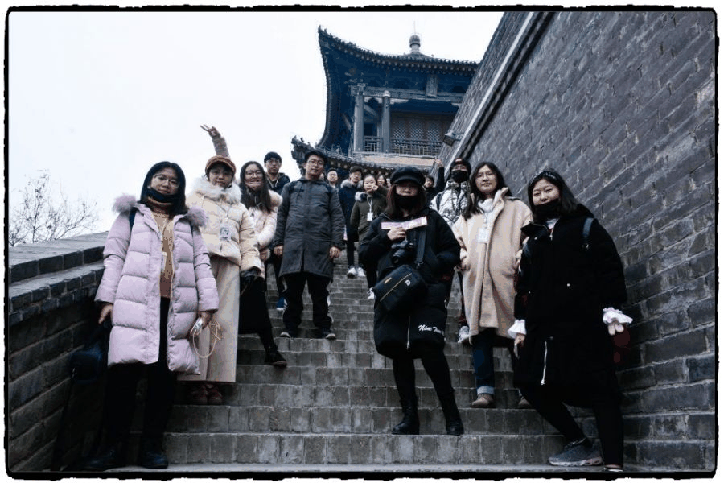
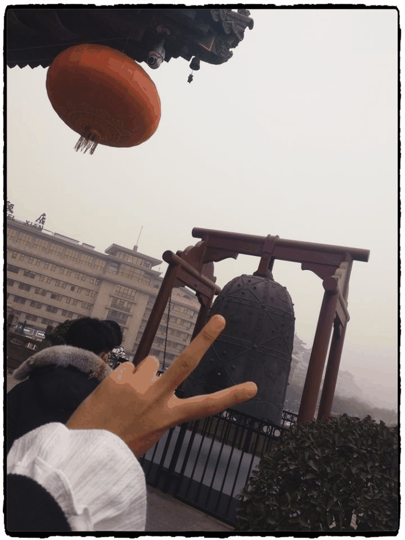
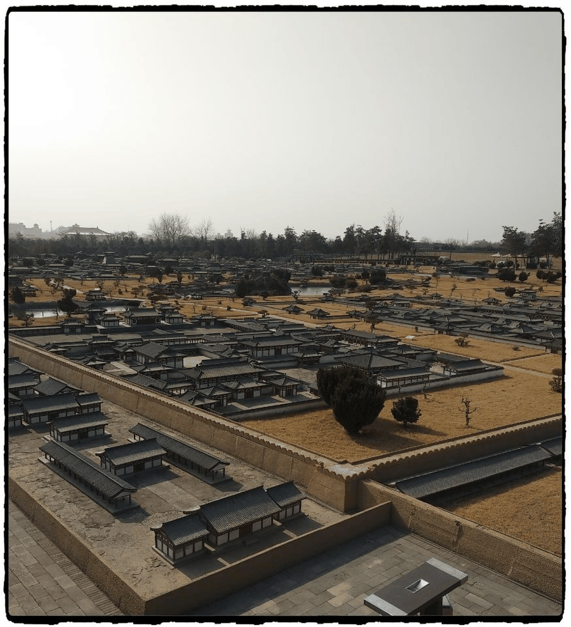
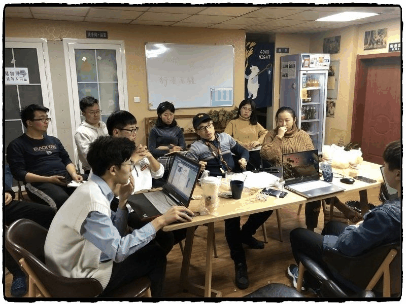

【秦简拓语·十八】简入繁出，追本溯源
在我认知中的世界里，一切皆由基础的人、事、物交织而成，而或相独、或相系的物则称为景。在这次的西安之旅中，遇到了诸多可亲、可敬又可爱的人，目睹了可叹、可感的一系列景物，也由此引发了我几乎未曾有过的、对现实情况的深度思考，这些宛若独立于我生活的一个小世界。


01
所遇之人
在西安，与一群并肩的行者齐步，邂逅了素未谋面的热心当地人。回味那七天充实的实践，发现志同道合的行者们是我收获的最永恒的财富，看到的景、经历的事都会随着时间在记忆里模糊，但行者们的情谊一直在。从紧张到死的面试，到初次见面的些许拘谨，再到后来，慢慢熟悉、渐渐放开，畅快的笑来自你们，入心的思也来自你们，很幸运，很感激，会怀念……

02
所睹之景
此次调研之行，我们几乎遍历西安，久负盛名的陕西历史博物馆，“崭新”的钟楼，碑林博物馆启发了我对调研主题——文物保护的思考，宏伟的明城墙几乎无处不见，三处对待古迹遗址不同保护传承方式的景点：原生态的阿房宫遗址、雍容华贵的大唐芙蓉园、公园形式的大明宫遗址，群山环绕的华清宫，些许失望的秦兵马俑，大小雁塔，乾陵地宫，无字碑。走过这么多地方，仿佛经历了西安的悠悠千年历史，也收获着感慨与震撼。

03
所思之事
在每晚的例行会议中，都有一大部分时间，大家会坐下来分享一天下来的见闻思，这引导着我去思考，也接受了大家更精炼、有概括性的思想。拿出其中留给我印象较深的两件事来分享一下，一是关于文物古迹保护与修葺的适当限度，钟楼的红墙黛瓦，大唐芙蓉园的宏伟华丽，相比阿房宫的原始荒芜，是适应文物古迹不同特点的不同保护方式，但是也都存在不同的问题，把它们列举出来对比着看，我们思考的是未来可以怎么改善，从而让文物古迹的维持更好的效果，发挥它存在的意义。二是对古人智慧的感叹，陕西历史博物馆的应用了连通器原理的文物，精细的镂空器皿，还有在水中的平衡器，以及秦兵马俑中发掘的不朽不锈铜剑，这些如今看来仍令人惊奇，应了兵马俑遗址导游的话：“时代在进步，科技在倒退，真是越看越惭愧！”
目睹的景为入，由此引发的深思为出，简入繁出，根据现象发现问题，追本溯源，是调研中我们行动的本质，也是以后面对更纷繁世界的基调。“行者无疆”给予我历练，让我成长。行者用双脚丈量出来的，是为后来人铺就的无垠疆土。

来源丨行者无疆实践团
文字丨梁子璇
排版丨邓子孚
审核丨潘雯雯 邓子孚
行者无疆实践团
QQ：2758025831

随行者一起认识世界
长按二维码关注